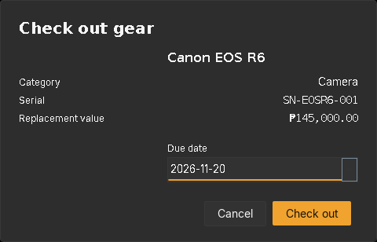
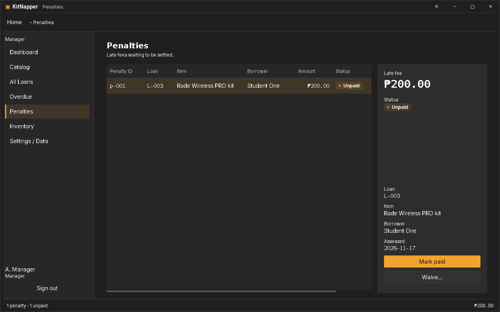
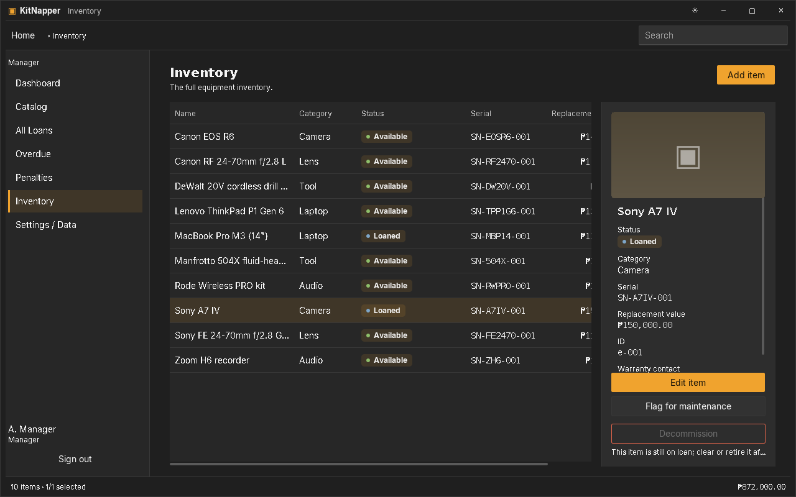

Replacement value and serial are shown before anyone commits to a loan.

One frozen late fee per return. Waiving needs a written reason, and settlement is one-way.

Photos live in kitnapper-images/; an item that is out on loan
stays read-only until it comes back.
Every screen above is thin on purpose: it renders state and forwards events, and the rules stay in the model and the services.